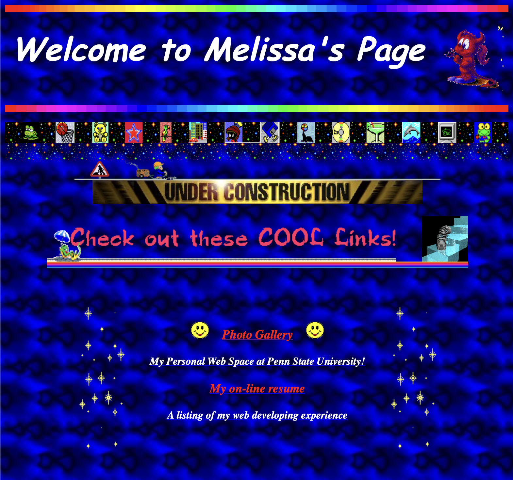
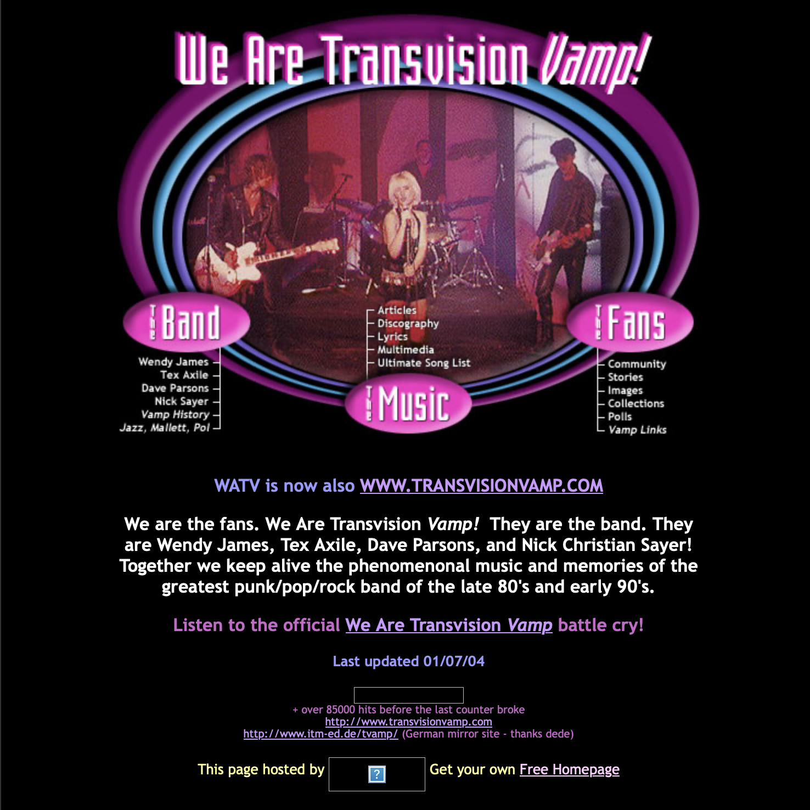

The early internet, especially during the late 1990s and early 2000s, was a very different space compared to today. Websites were often created by individuals rather than companies, and they focused more on creativity and personal expression than clean design or usability. Instead of following strict design rules, people experimented with layouts, colors, and graphics to make their pages unique.

Unlike modern websites, which often use minimalist and structured designs, early websites were colorful, cluttered, and highly expressive. Personal websites were common, where people shared information about their interests, favorite music, hobbies, and identities (kinda similar to how social media works today). These sites reflected the personality of their creators and often felt more personal and informal.
Many people created websites using free hosting platforms like GeoCities, where users could design their own pages using simple HTML. These websites often included “About Me” sections, guestbooks where visitors could leave messages, and lists of favorite things or links to other sites.

Some of the most common features of early websites included animated GIFs, visitor counters, buttons and link exchanges, web rings, tiled backgrounds, and MIDI music that played automatically. These elements helped create a visually busy but personal style that defined the early internet before social media.
In this website, you can explore the aspects of early internet pages that made them so unique.
Click on the images to view the sites!